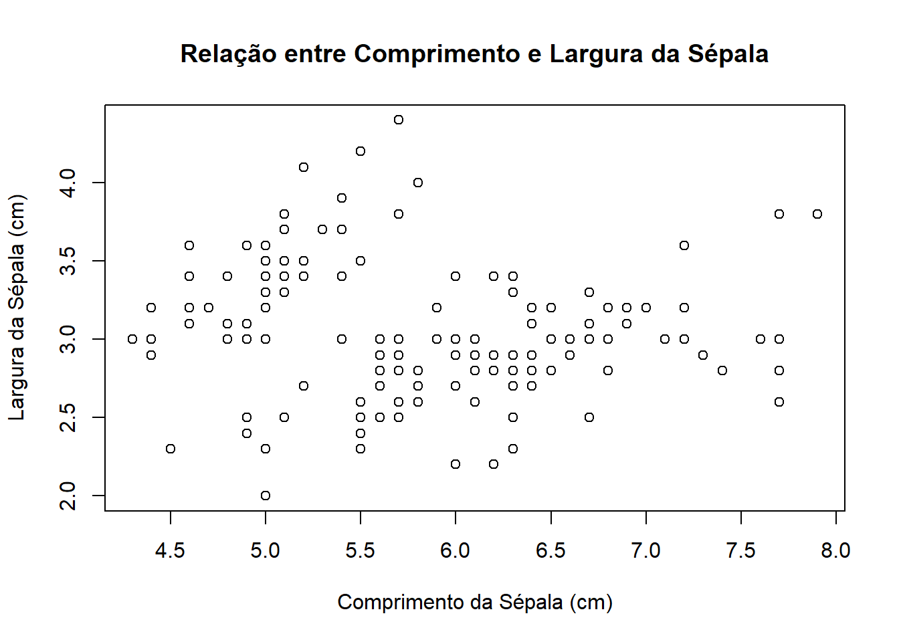
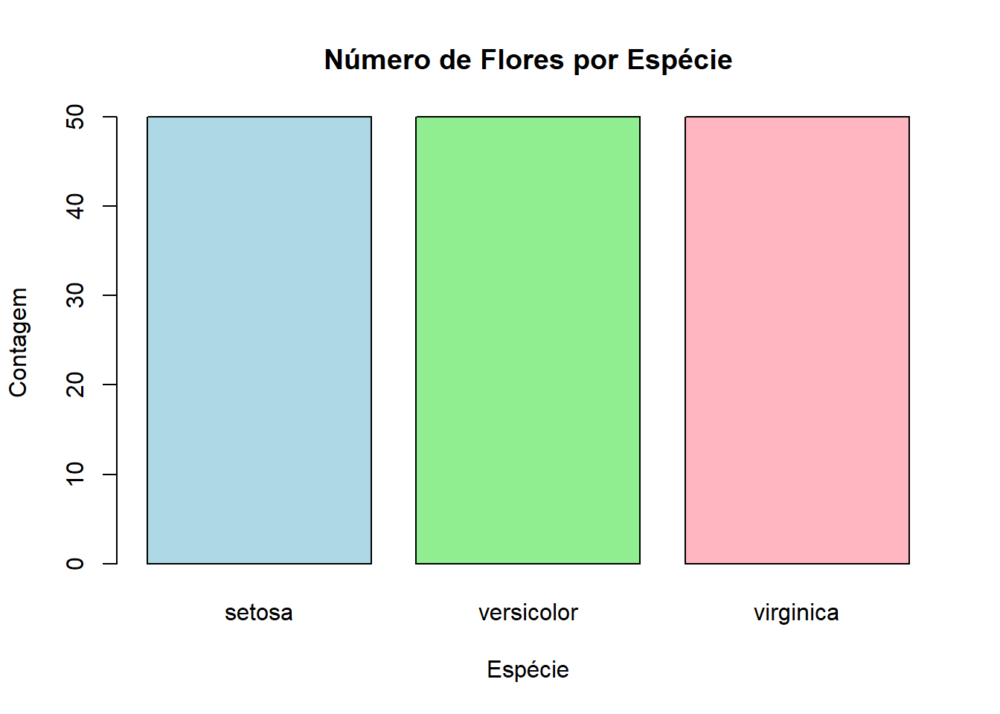
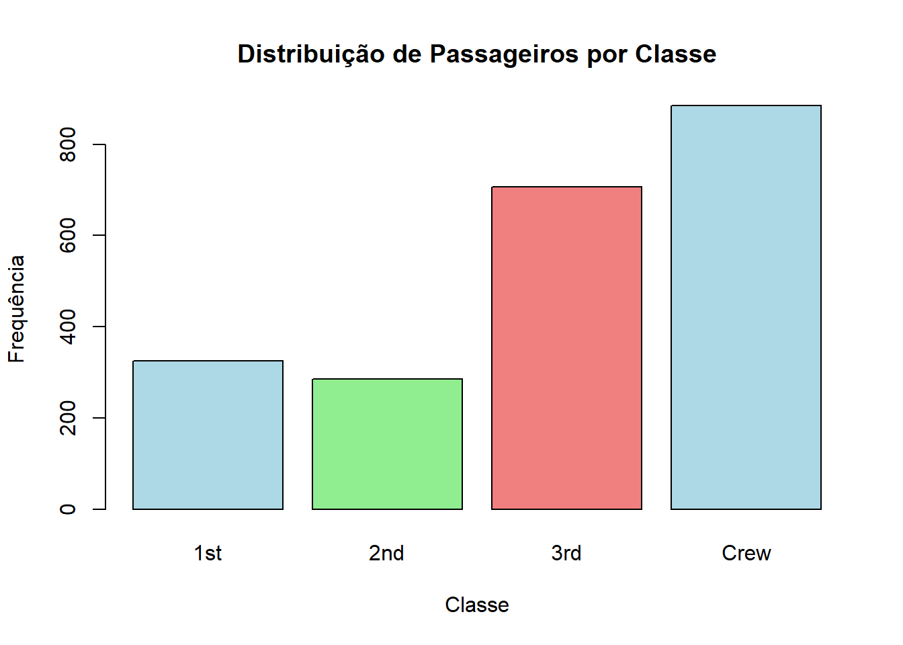
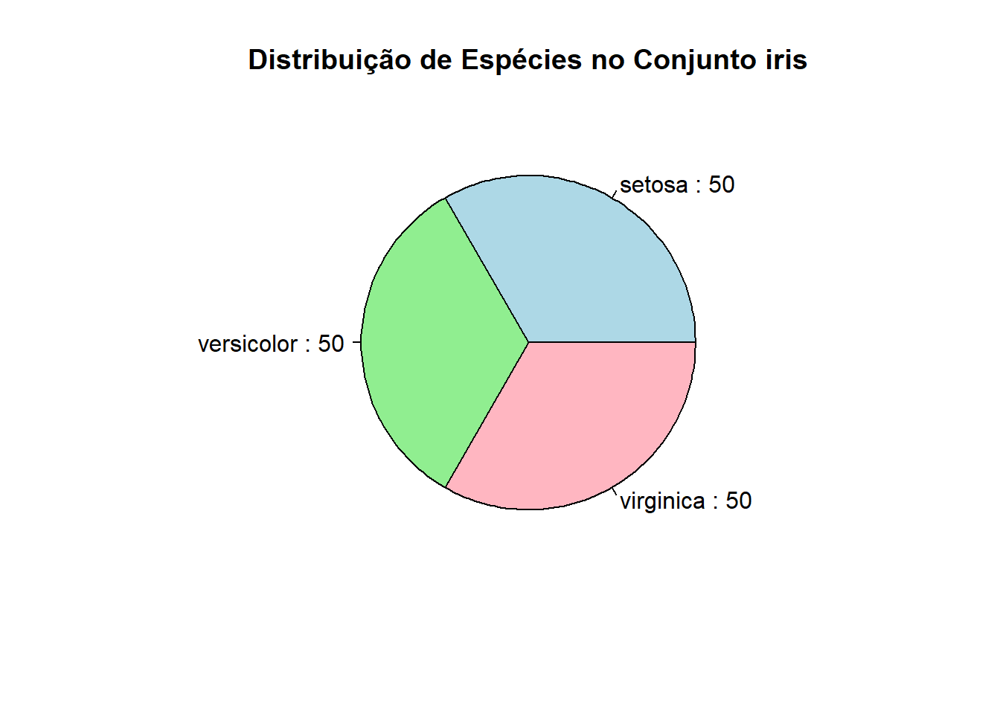
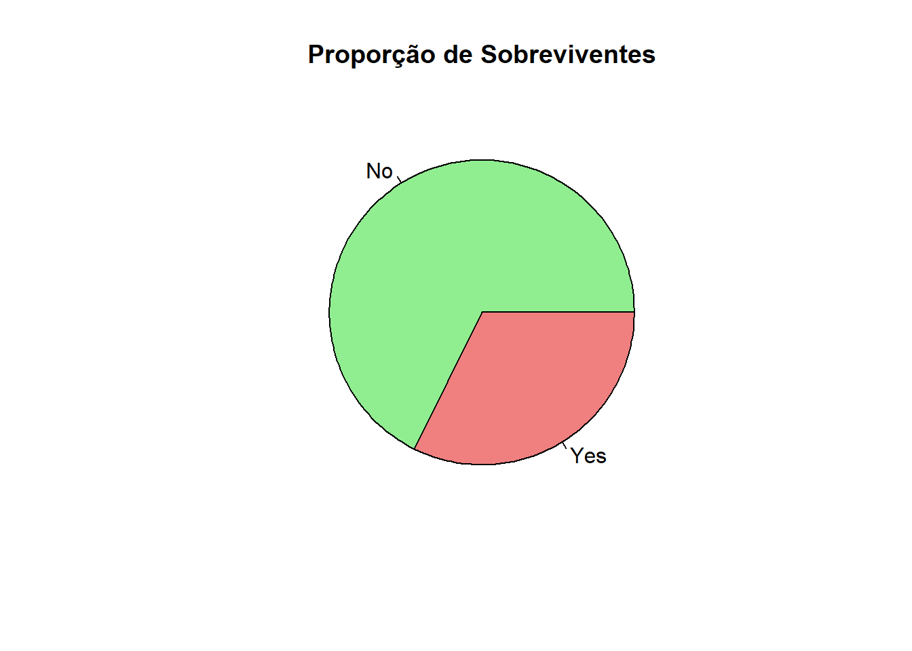
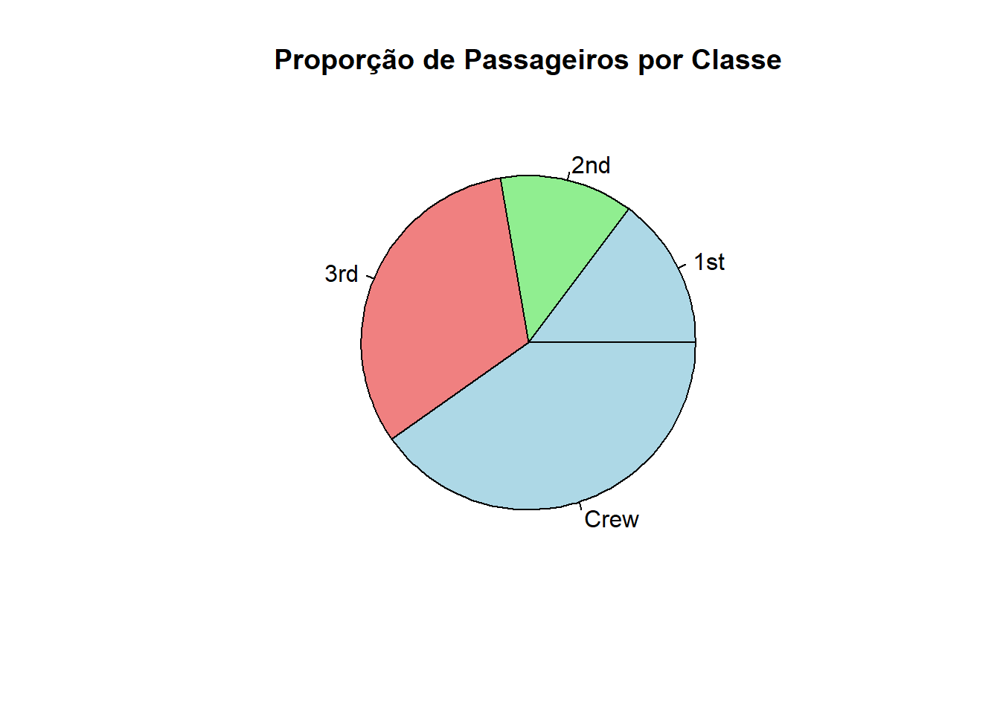
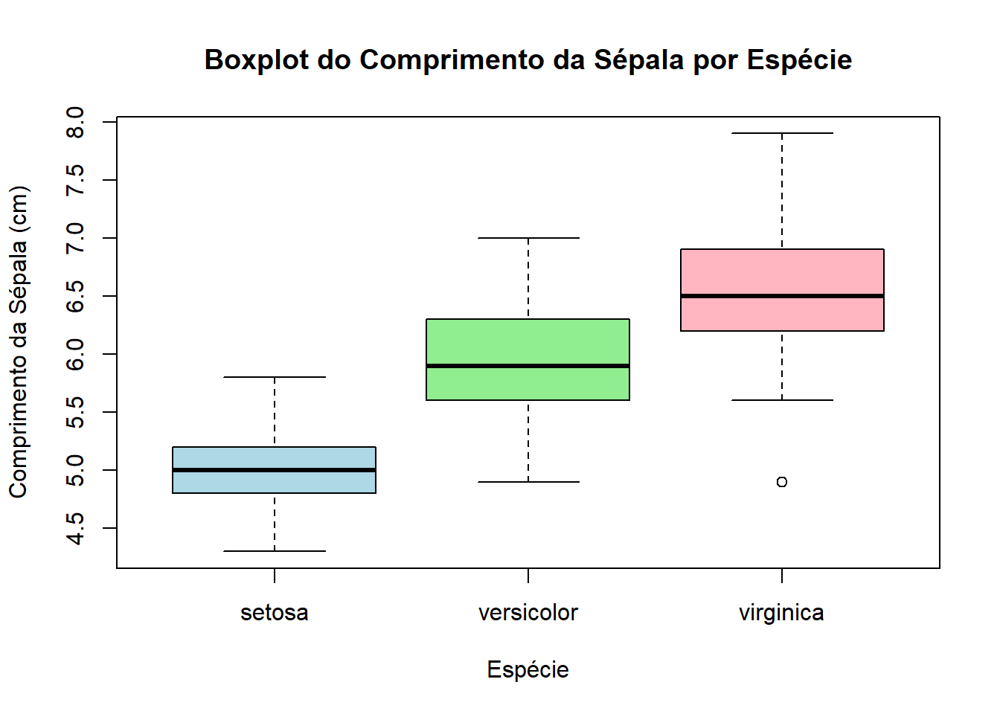
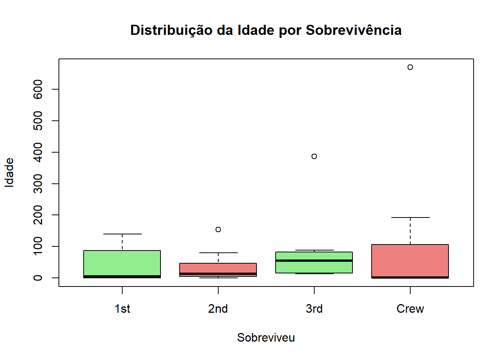
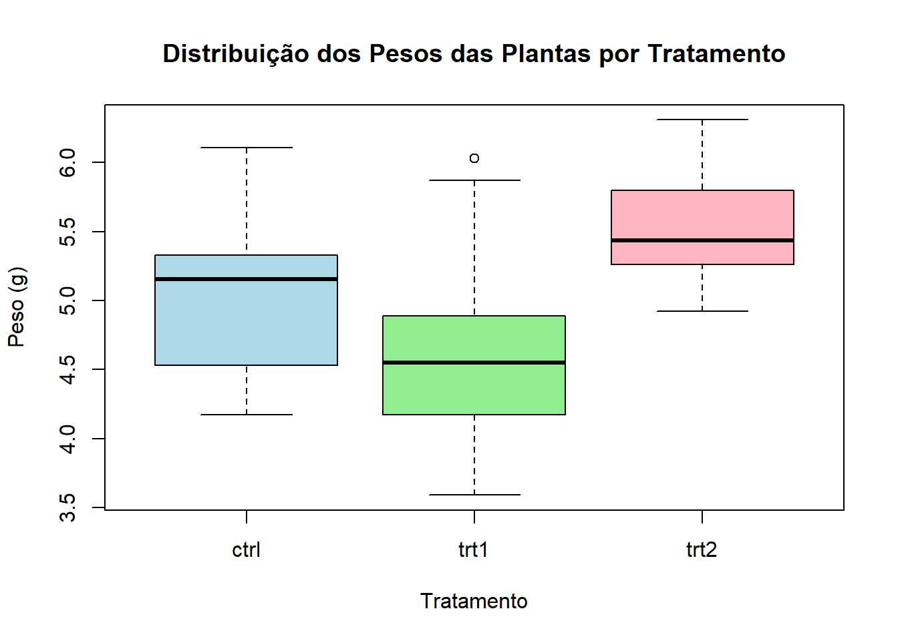

✅ Certifiquem-se de que o R foi instalado e está em bom funcionamento.
Objetivos
📌 Foco em pesquisas pesquisas acadêmicas
📌 Vizualização, processamento e análise dos dados
📌 Conclusão sobre a informação dos dados
Estatística descritiva
Quantitativas (numéricas)
Qualitativas (categóricas)
Tipos de variáveis
#Carregando o diretóriosetwd("C:/Users/marip/Documents/Cursos")#Importando o conjunto de dados numéricos .txtdados_iris<-read.table(file ="iris_dataset.txt",header =TRUE,sep="\t")attach(dados_iris)#Visualização dos dados#View(dados_iris)#Resumo das informações do conjunto de dadossummary(dados_iris)
comprimento.da.sepala..cm. largura.da.sepala..cm. comprimento.da.petala..cm.
Min. :4.300 Min. :2.000 Min. :1.000
1st Qu.:5.100 1st Qu.:2.800 1st Qu.:1.600
Median :5.800 Median :3.000 Median :4.350
Mean :5.843 Mean :3.057 Mean :3.758
3rd Qu.:6.400 3rd Qu.:3.300 3rd Qu.:5.100
Max. :7.900 Max. :4.400 Max. :6.900
largura.da.petala..cm. especie
Min. :0.100 Length:150
1st Qu.:0.300 Class :character
Median :1.300 Mode :character
Mean :1.199
3rd Qu.:1.800
Max. :2.500
#Fatoressummary(factor(dados_iris$especie))
setosa versicolor virginica
50 50 50
#Carregando conjunto de dados categóricos .csvdados_titanic<-read.csv(file ="titanic.csv")#Visualização dos dadosView(dados_titanic)#Resumo das informações do conjunto de dadossummary(dados_titanic)
Class Sex Age Survived
Length:32 Length:32 Length:32 Length:32
Class :character Class :character Class :character Class :character
Mode :character Mode :character Mode :character Mode :character
Freq
Min. : 0.00
1st Qu.: 0.75
Median : 13.50
Mean : 68.78
3rd Qu.: 77.00
Max. :670.00
Figura 1: Posicionamento da média e mediana em dados siméticos
Coeficiente de variação
cv<-desv_pad/media*100cv
[1] 14.17113
# Criando a tabela de frequências para a variável "Class"tabela_frequencia_classe <-xtabs(Freq ~ Class, data = dados_titanic)tabela_frequencia_classe
Class
1st 2nd 3rd Crew
325 285 706 885
Gráficos
Plot
plot(iris$Sepal.Length, iris$Sepal.Width, main ="Relação entre Comprimento e Largura da Sépala", xlab ="Comprimento da Sépala (cm)", ylab ="Largura da Sépala (cm)")

plot(iris$Sepal.Length, iris$Sepal.Width, col =as.factor(iris$Species), pch =19, main ="Relação entre Comprimento e Largura da Sépala por Espécie", xlab ="Comprimento da Sépala (cm)", ylab ="Largura da Sépala (cm)")legend("topright", legend =levels(iris$Species), col =1:3, pch =19)
# Contando o número de flores por espécieespecie <-table(iris$Species)# Criando o barplotbarplot(especie, main ="Número de Flores por Espécie", xlab ="Espécie", ylab ="Contagem", col =c("lightblue", "lightgreen", "lightpink"))

# Criando um gráfico de barrasbarplot(tabela_frequencia_classe, main ="Distribuição de Passageiros por Classe",xlab ="Classe",ylab ="Frequência",col =c("lightblue", "lightgreen", "lightcoral"),border ="black")

Gráfico de pizza (pie chart)
# Criando o gráfico de pizzapie(especie, main ="Distribuição de Espécies no Conjunto iris", col =c("lightblue", "lightgreen", "lightpink"),labels =paste(names(especie), ":", especie))

# Criando o gráfico de pizza para a variável Sobrevivência# Tabela de frequência por sobrevivênciatabela_frequencia_sobrevivencia <-xtabs(Freq ~ Survived, data = dados_titanic)pie(tabela_frequencia_sobrevivencia, main ="Proporção de Sobreviventes",col =c("lightgreen", "lightcoral"))

pie(tabela_frequencia_classe, main ="Proporção de Passageiros por Classe", col =c("lightblue", "lightgreen", "lightcoral"))

Boxplot
# Criando um boxplot do comprimento da sépala por espécieboxplot(Sepal.Length ~ Species, data = iris, main ="Boxplot do Comprimento da Sépala por Espécie",xlab ="Espécie", ylab ="Comprimento da Sépala (cm)", col =c("lightblue", "lightgreen", "lightpink"))

# Tabela de contingência cruzando Classe e Idadetabela_xtabs <-xtabs(Freq ~ Class + Age, data = dados_titanic)# Criando um boxplot da Idade em função da Sobrevivênciaboxplot(Freq ~ Class, data = dados_titanic,main ="Distribuição da Idade por Sobrevivência",xlab ="Sobreviveu",ylab ="Idade",col =c("lightgreen", "lightcoral"))

Conclusões sobre os dados
Teste de hipótese
Para chegar a conclusões sobre os dados que nos auxiliem na tomada de decisões devemos testar nossa hipótese para verificar sua veracidade.
📌 Todas as espécies tem a mesma média de comprimento de sépala?
\(H_{0}\): todas as espécies tem a mesmo comprimento médio de sépala. \[H_{0}: \mu_{versicolor} = \mu_{setosa} = \mu_{virginica}\]\(H_{1}\): ao menos uma das espécies não tem o mesmo comprimento médio de sépala.
# Realizando a ANOVAanova_result <-aov(comprimento.da.sepala..cm. ~ especie, data = dados_iris)# Exibindo o resumo da ANOVAsummary(anova_result)
Df Sum Sq Mean Sq F value Pr(>F)
especie 2 63.21 31.606 119.3 <2e-16 ***
Residuals 147 38.96 0.265
---
Signif. codes: 0 '***' 0.001 '**' 0.01 '*' 0.05 '.' 0.1 ' ' 1
Conclusão: Como p-valor<0,05, conclui-se que há diferença significativa entre o comprimento médio das sépalas das espécies ao nível de confiança de 5%. Portanto, as espécies não possuem mesmo comprimento médio de sépala.
📌 Qual espécie tem maior comprimento de sépala?
# Realizando o teste de TukeyTukeyHSD(anova_result)
Tukey multiple comparisons of means
95% family-wise confidence level
Fit: aov(formula = comprimento.da.sepala..cm. ~ especie, data = dados_iris)
$especie
diff lwr upr p adj
versicolor-setosa 0.930 0.6862273 1.1737727 0
virginica-setosa 1.582 1.3382273 1.8257727 0
virginica-versicolor 0.652 0.4082273 0.8957727 0
🟡 Versicolor vs. Setosa:
Há uma diferença significativa no comprimento da sépala entre as espécies Versicolor e Setosa, com a média de Versicolor sendo 0.930 cm maior que a de Setosa. O intervalo de confiança não inclui 0, o que indica que a diferença é estatisticamente significativa.
🟠 Virginica vs. Setosa:
A diferença no comprimento da sépala entre as espécies Virginica e Setosa é significativa, com a média de Virginica sendo 1.582 cm maior que a de Setosa. O intervalo de confiança não inclui 0, reforçando que a diferença é estatisticamente significativa.
🟢 Virginica vs. Versicolor:
A espécie Virginica também tem um comprimento médio de sépala significativamente maior que Versicolor, com uma diferença de 0.652 cm. O intervalo de confiança também não inclui 0, indicando significância estatística.
Regressão Linear
Quando se deseja descrever a relação de variáveis explicativas com uma variável dependente. Apenas para variáveis quantitativas.
Na equação abaixo temos a i-ésima observação da variável y sendo descrita pela função linear em que \(\beta_{0}\) é o coeficiente linear e \(\beta_{1}\) é o coeficiente angular que acompanha o i-ésimo valor da variável explicativa \(x_{1}\). O termo \(e_{i}\) corresponde ao erro aleatório, que não é explicado pelo modelo, associado a cada observação i. \[y_{i} = \beta_{0} + \beta_{1}x_{1i} + e_{i}\]
#Importando o conjunto de dados numéricos .txtdados_plants<-read.table(file ="PlantGrowth.txt",header =TRUE,sep="\t")attach(dados_plants)head(dados_plants)
peso tratamento
Min. :3.590 Length:30
1st Qu.:4.550 Class :character
Median :5.155 Mode :character
Mean :5.073
3rd Qu.:5.530
Max. :6.310
# Boxplot para visualizar a distribuição dos pesos por grupo de tratamentoboxplot(peso ~ tratamento, data = dados_plants,main ="Distribuição dos Pesos das Plantas por Tratamento",xlab ="Tratamento", ylab ="Peso (g)",col =c("lightblue", "lightgreen", "lightpink"))

# Ajustar o modelo de regressão linear simplesmodelo <-lm(peso ~ tratamento, data = dados_plants)# Ver os resultados do modelosummary(modelo)
Call:
lm(formula = peso ~ tratamento, data = dados_plants)
Residuals:
Min 1Q Median 3Q Max
-1.0710 -0.4180 -0.0060 0.2627 1.3690
Coefficients:
Estimate Std. Error t value Pr(>|t|)
(Intercept) 5.0320 0.1971 25.527 <2e-16 ***
tratamentotrt1 -0.3710 0.2788 -1.331 0.1944
tratamentotrt2 0.4940 0.2788 1.772 0.0877 .
---
Signif. codes: 0 '***' 0.001 '**' 0.01 '*' 0.05 '.' 0.1 ' ' 1
Residual standard error: 0.6234 on 27 degrees of freedom
Multiple R-squared: 0.2641, Adjusted R-squared: 0.2096
F-statistic: 4.846 on 2 and 27 DF, p-value: 0.01591
Conclusões da regressão
🟡 (Intercept): O valor estimado para o intercepto é 5.0320. Isso significa que o peso médio das plantas no grupo de controle (grupo de referência) é de aproximadamente 5.03 unidades.
🟢 tratamento trt1: O coeficiente associado ao tratamento trt1 é -0.3710. Isso significa que as plantas no tratamento trt1 tendem a pesar cerca de 0.371 unidades a menos que o grupo de controle, embora essa diferença não seja estatisticamente significativa (p = 0.1944, maior que 0.05).
🟠 tratamento trt2: O coeficiente associado ao tratamento trt2 é 0.4940. Isso indica que as plantas no tratamento trt2 pesam em média 0.494 unidades a mais que as do grupo de controle. No entanto, a significância é marginal, com um valor-p de 0.0877 (um pouco acima do limite tradicional de 0.05, mas com indicação de uma possível tendência).